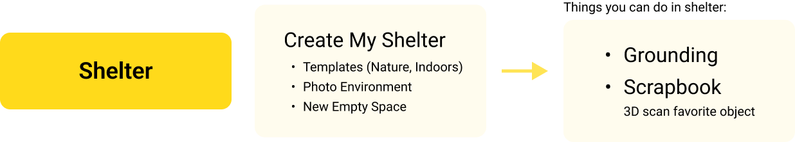
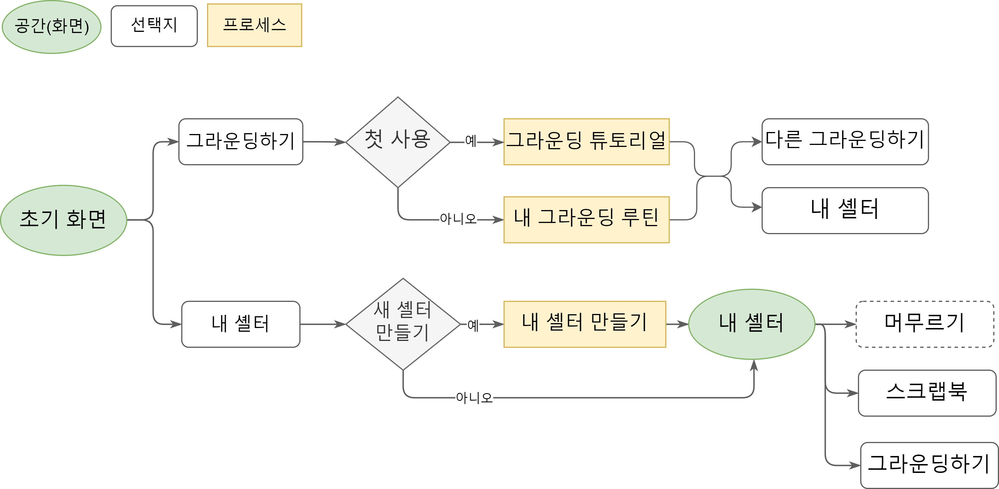
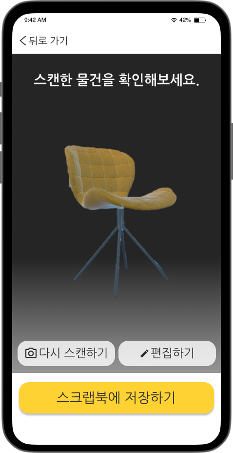

Project Overview
Designing a VR-based mental health service 'BE' that incorporates personalized grounding techniques practice for individuals with mental disorders such as Post-Traumatic Stress Disorder (PTSD) or anxiety disorders.
This innovative approach aims to provide users with two main functions:
- Guided and interactive grounding practice sessions
- Personalized virtual environments and grounding routines
By offering these features, we strive to enhance treatment efficacy and reduce societal costs associated with mental health issues.
Background
Who is it for?
- People dealing with various mental health challenges
- Specifically, those with PTSD, panic, or anxiety disorders
- Individuals who want to learn and practice grounding techniques
What is Grounding?
Grounding is a powerful tool for people with PTSD, panic
disorder, or anxiety.
When they're hit with flashbacks or panic attacks,
grounding helps them snap back to reality.
It acts
as both an emergency brake for the mind and an emotional anchor,
pulling them back to the present.
However, while grounding techniques are powerful mental health
tools,
mastering them is challenging, demanding extensive and
consistent practice.
Motivation for the project
The challenge of this effective but difficult-to-master technique isn't just the amount of practice required. My friends who use grounding also struggle to find safe, comfortable spaces or assistance to practice effectively.
This realization inspired us to pursue groundbreaking research on the subject, aiming to contribute to the field in a meaningful way. After extensive brainstorming, we finally arrived at a promising solution:
What if we could use VR to create a safe,
personalized
environment for grounding practice?
Goal
Therefore, this study aimed to design a VR service that helps people master grounding techniques by providing users with personalized practice sessions and customizable virtual spaces.
Challenge
As a UX designer:
- I was unfamiliar with grounding techniques
- The app needed to be simple and easy to use, especially for those unfamiliar with grounding techniques or VR applications
As a Researcher
- We aimed to submit our work to a HCI conference(lnik), so it had to be thoroughly examined and researched to ensure academic value
Literature Review
Literature Review Process
- Extensive review of research papers on VR mental health services in Korean and English
- Comprehensive study of grounding techniques
- Consultation with the director of the Korean Trauma Research and Education Institute
VR Market and Design Research
To complement our team's literature review, I personally conducted in-depth research on two crucial areas:
- Market research on existing VR mental health services
- Study of VR UX/UI design principles
Key Findings
3 Types of Grounding
Grounding comes in three different types, each using unique forms of self-stimulation to help individuals regain control during distress or dissociation. One can choose the method that works best and feels most comfortable for them.
Mental Grounding:
Focuses on using
cognitive processes
- Describing surroundings in detail
- Counting objects
- Memory Game
Physical Grounding:
Uses bodily
sensations
- Jumping up and down, squeezing hands
- Focusing on breathing
- 5-4-3-2-1 Rule
Soothing Grounding:
Concentrates on
self-soothing techniques
- Think of favorite things, comforting memories
- Touch comforting objects
- Visualizing safe places
Application Features
Based on the research, we identified the key features critical to the service:
Grounding Feature
- Customizable grounding routines
- Step-by-step grounding instructions
-
Learn why grounding is necessary
- To enhance effectiveness, inform in the tutorial
-
Rate subjective discomfort on a 0-10 scale
- This helps improve sense of control and demonstrates effectiveness
-
Select preferred voice guide type (age and gender)
- Accommodates individual preferences
-
Link mobile application for emergencies
- Enables access to personalized content during real-life emergencies
Shelter Feature: Customizable virtual environment
We incorporated the 'think of comfortable space' soothing grounding technique into a 'Shelter' feature. This allows users to create their own space and add personal objects from reality using 3D scanning.
-
Personal Object Integration:
- '3D Scan' function: Ability to incorporate user's real-life objects
- 'Scrapbook' feature: Collection of comforting images and memories
-
Cross-Platform Accessibility:
- Mobile app cloud synchronization: Enables access to personalized content during real-life emergencies
User Research
In-Depth User Interview
We conducted in-depth interviews with a focused group of participants. The interview cohort profile was as follows:
- Relevant Conditions: PTSD, anxiety disorders, panic disorder, and other related disorders
- Sample: Four females in their mid-20s
Interview Questions
To comprehensively understand users' experiences with grounding techniques and their potential interest in a VR application, we structured our interview around four key areas. Below are representative examples of questions from each category:
Grounding Experience
- What aspects of grounding did you find challenging or helpful?
- How did grounding affect you?
Usage Timing
- When do you usually practice grounding techniques?
Preferred Environment
- What type of setting do you prefer for grounding practices?
VR Experience
- What did you like or dislike about using VR devices or applications?
User Interview Analysis
Following the interviews, I conducted a thorough analysis of the responses using an affinity diagramming technique. This method allowed me to break down the answers and group them into meaningful clusters, revealing key patterns and insights about our users.

Key Highlights
My analysis of the interview data revealed the following key insights about our participants:
- Use grounding techniques in emergency situations and daily life
- Feel the need for practice but find it difficult to do alone
- Have different preferences for spaces when grounding
- Want specific guidance, tactile stimulation, and safe space creation features
- Dislike visual elements and interactive mechanisms that disturb immersion
Initial User Persona
Based on affinity diagramming and user research, I developed a single persona, as our interview group consisted exclusively of women in their twenties, representing a focused demographic.
Issue: Introducing the Shelter
Problem
Users need a safe space for grounding, but new users don't have one. Should users create their shelter before or after starting grounding exercises?
This was a critical decision point in the design process. I needed to carefully structure the user journey to prevent users from abandoning the app midway through their experience.
Options Considered:
Option 1: Create Shelter -> Start Grounding
- Pro: Personalized space available from the beginning
- Con: Potential overwhelm for new users, creating a barrier to entry
Option 2: Start Grounding -> Create Shelter
- Pro: Immediate access to grounding techniques
- Con: Might not cater to users primarily interested in creating their space
Realizing My Mistake
I went back to reading the interviews, analysis, and persona. That's when I realized I had made a crucial mistake.
The initial persona was based solely on
demographics,
not on
characteristics that would actually inform the user flow and
design decisions.
Revised Personas
After much reflection, I decided to remake the personas based on users' familiarity with grounding techniques, recognizing that this skill varies greatly based on individual experience.
This process was challenging, as it required me to reanalyze all the interview data from a new perspective. I carefully categorized the interview results into beginner and proficient users, which provided a more comprehensive understanding of user needs.
Beginner Users:
- Lack confidence in applying grounding techniques during crises
- Absence of readily available safe spaces for practice
Advanced Users:
- Limited opportunities to expand grounding technique repertoire
- Need for more personalized, comforting virtual environments
Solution
The revised personas revealed that my primary focus should be on first-time users like "Kim Chobo". Based on this, I developed the following solution:
Key Insights
- Add starting space for immediate grounding practice (Nature, Indoor, ...)
- Introduce shelter creation during the tutorial, specifically in the soothing grounding section
This approach lowers the entry barrier for beginner users while still offering personalization options that more experienced users desire.
Final Design
User Flow
Based on the revised personas and adhering to VR UX/UI best practices, I created the following user flow:
Key Features:
- First-time user journey: Includes a comprehensive 'grounding tutorial', introducing grounding techniques, shelter creation, and personalized routines
- Flexibility: Users can freely access both 'Grounding' and 'Shelter' features at any point in their journey, ensuring adaptability to individual needs
Application Screens
Start Screen
Users can select between 'Grounding' or 'My Shelter'
Select Space Screen
(After Selecting 'Grounding')
Users can select spaces to do grounding practice
Mental Grounding Screen
Example screen for the 'Memory Game' mental grounding technique, where users need to remember an image and then describe it.
Physical Grounding Screen
Prototype showing 'Body Scan' physical grounding, where users focus on sensations in specific body parts as instructed.
Below is a video demo of physical grounding in VR, with accessibility functions such as 'show visual guide' and 'turn on audio guide'.
Shelter (Soothing Grounding) Features
Example mobile screen mockup of the linked application, which allows users to 3D scan their attachment objects for importing into the VR service.
Below is video demo of shelter feature, placing favorite object(3D scanned) in the user's shelter.
Result: Research Recognition
HCI Korea Conference 2024
Our work received significant recognition in the field of Human-Computer Interaction:
- Accepted for oral presentation at the HCI Korea Conference 2024, placing it among the top submissions of the year
- Published in the official conference proceedings
This achievement highlights the significance of our research and its valuable contribution to the HCI field.
Publication: Woo, S., & Jung, J. (2024). 'Be': Personalized VR Guidance and Shelter Creation for Mental Health. In Proceedings of HCI Korea 2024 Conference (pp. 237-244). The HCI Society of Korea.
📄 View This Case Study's Paper (Kr) | View Full Proceedings | Conference Website
What I Learned
- Learned how to translate complex psychological techniques, such as grounding, into intuitive digital experiences
- Gained insight into the purpose of UX design and research methods, learning to apply them strategically to support decision-making in the design process
- Understood the value of thorough subject research, including market analysis and literature review. Learned how direct engagement with interviewees provides deeper insights into the topic